Tất cả tài khoản mẫu dưới đây đã được chuẩn hóa mật khẩu và phân quyền sẵn để bạn có thể đăng nhập và trải nghiệm ngay lập tức:
| Vai trò | Email đăng nhập | Mật khẩu | Đường dẫn vào | Chức năng chính |
|---|---|---|---|---|
| 1. Admin Tổng | hvan86771@gmail.com |
123456 |
/login → /admin |
Quản lý toàn hệ thống, cấu hình gói sự kiện, ngân hàng VietQR, duyệt gói khách thuê, xử lý tranh chấp. |
| 2. Ban Tổ Chức (Sự kiện "lễ test") | hoanghieufc25@gmail.com(hoặc hvan8611@gmail.com) |
12345678 |
/tenant |
Tạo & sửa sự kiện, quản lý sức chứa, thêm nhân sự theo email, gán quyền (Mời/Duyệt/Soát vé), quét QR trực tiếp. |
| 3. Nhân Sự Mời Khách | hieutestkhachmoi@gmail.com(hoặc hvan8612@gmail.com) |
12345678 |
/tenant |
Lấy link mời cá nhân + tải ảnh QR mời khách, thiết kế thiệp mời VIP, xem danh sách khách đã mời. |
| 4. Nhân Sự Duyệt Khách | hieuduyet@gmail.com |
12345678 |
/tenant |
Xem danh sách khách chờ duyệt (PENDING), bấm Duyệt vé (cấp mã QR ngay) hoặc Từ chối. |
| 5. Nhân Sự Soát Vé QR | hieuquetpr@gmail.com(hoặc hvan8613@gmail.com) |
12345678 |
/tenant hoặc /staff/scanner |
Bật camera quét mã QR trong 1 ô vuông xanh lá, nhận phản hồi Xanh/Vàng/Đỏ, lập biên bản tranh chấp. |
| 6. Khách Tham Dự (Xem vé QR) | hieuhoang@gmail.com(Mã vé: TKT-8-AA7B6D6A-99990732C7423E37) |
OTP 6 số gửi qua Email | /login (Tab Kiểm tra vé) → /my-ticket |
Mở thẻ vé điện tử Apple Wallet Pass, phóng to mã QR sáng 100% để xuất trình tại cổng soát vé. |
http://localhost:5173/login, đăng nhập bằng hvan86771@gmail.com / mật khẩu 123456. Hệ thống chuyển hướng tới Bảng Điều Hành Hệ Thống /admin./admin/tenants) để theo dõi danh sách các Ban Tổ Chức, hạn mức sự kiện, cấu hình tài khoản ngân hàng VietQR và các gói dịch vụ.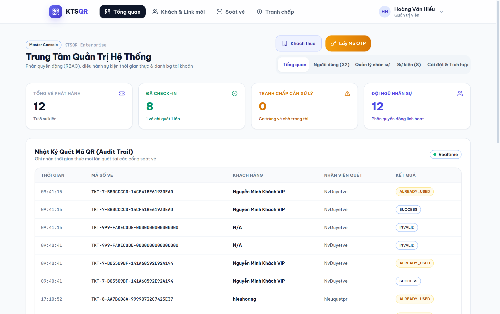
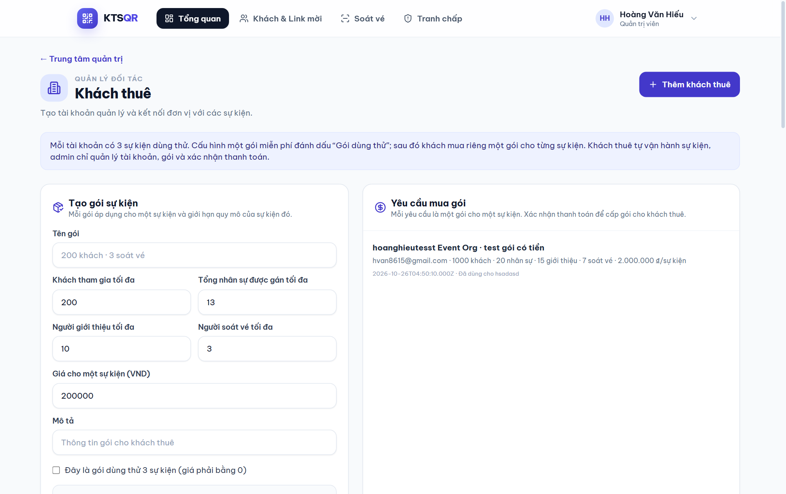
http://localhost:5173/tenant (hoặc tại /login chọn tab "Tôi muốn mở sự kiện"). Đơn vị mới có thể bấm "Đăng ký mở sự kiện ngay" để nhận ngay 3 sự kiện dùng thử miễn phí./tenant, bấm nút "+ Tạo sự kiện":
TTSK [ID]).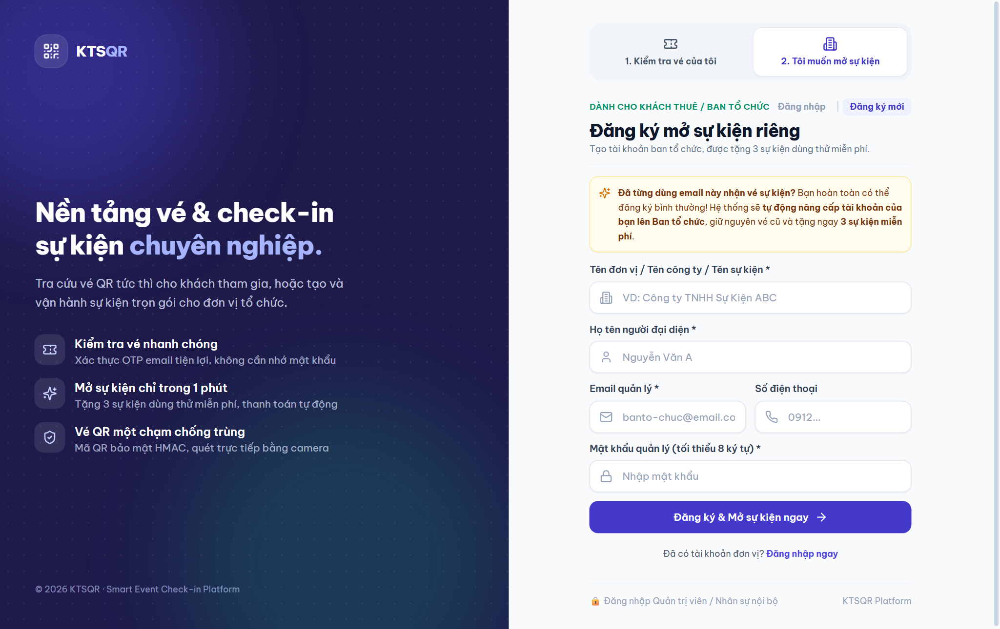
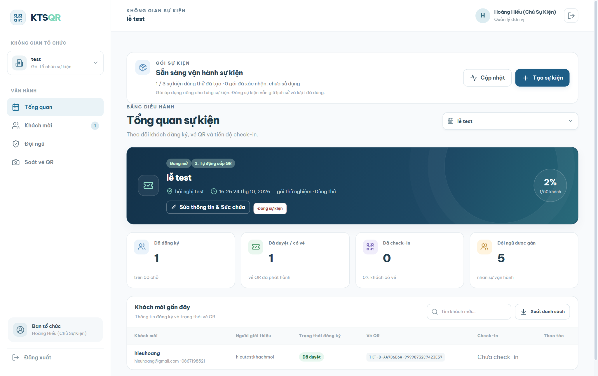
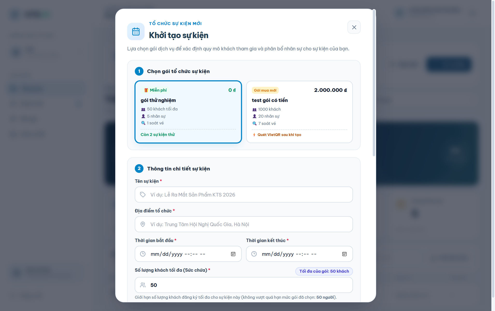
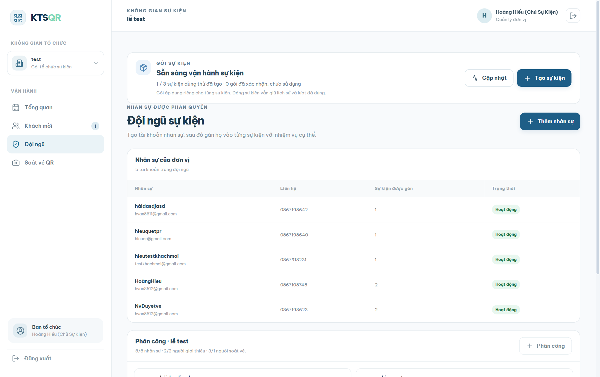
/tenant và đăng nhập bằng tài khoản nhân sự được phân quyền mời khách (VD: hvan8611@gmail.com / mật khẩu 12345678)./staff/referral) nếu muốn xuất thiệp mời kèm tên khách hàng trên phôi thiệp Canva.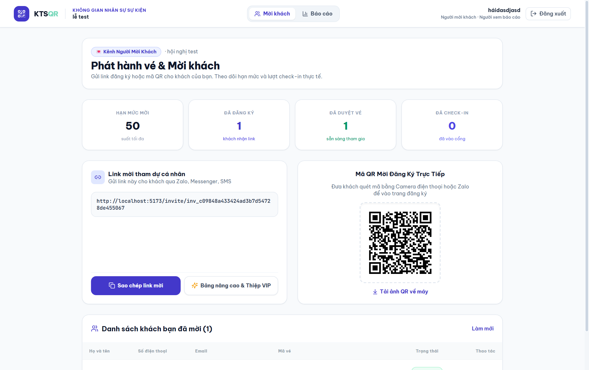
/invite/inv_... (hoặc quét mã QR mời). Trang Landing Page hiển thị thông tin sự kiện, thời gian, địa điểm và tên người giới thiệu.Chờ duyệt và thông báo realtime tới nhân sự phụ trách.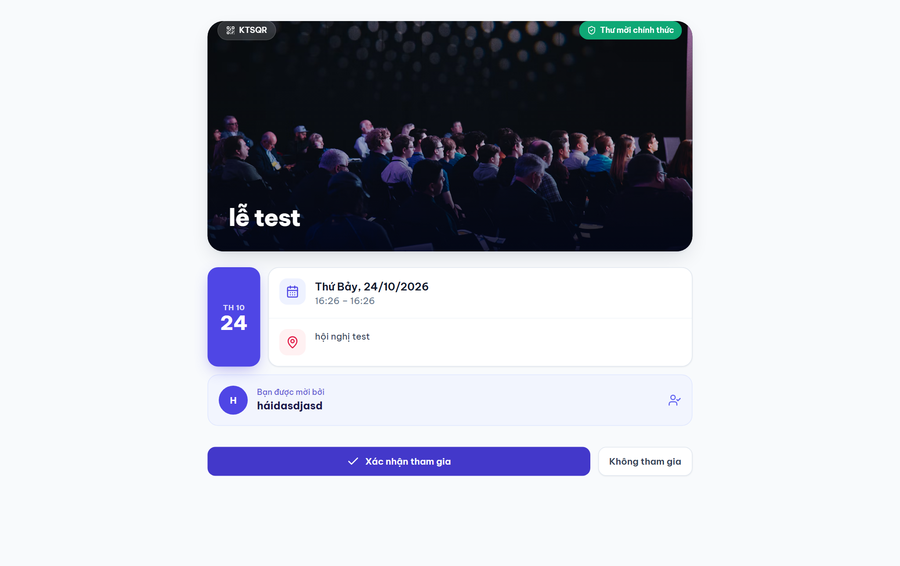
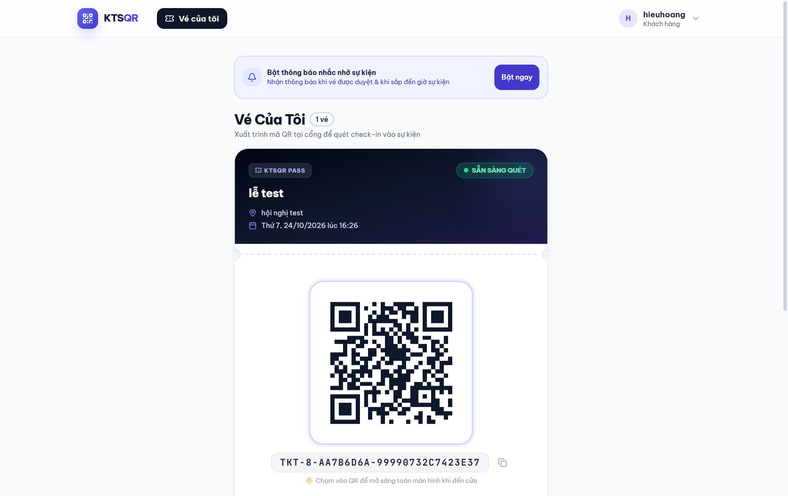
/tenant bằng tài khoản Người duyệt (VD: hvan8612@gmail.com / 12345678) hoặc tài khoản Ban tổ chức → Chọn tab "Duyệt khách" (hoặc mục "Khách mời" của Ban tổ chức).TKT-[EventID]-[UUID]-[HMAC], gửi email kèm vé QR cho khách, đồng thời đẩy thông báo Realtime (Socket.IO) giúp màn hình /my-ticket của khách tự động hiện thẻ QR mà không cần tải lại trang!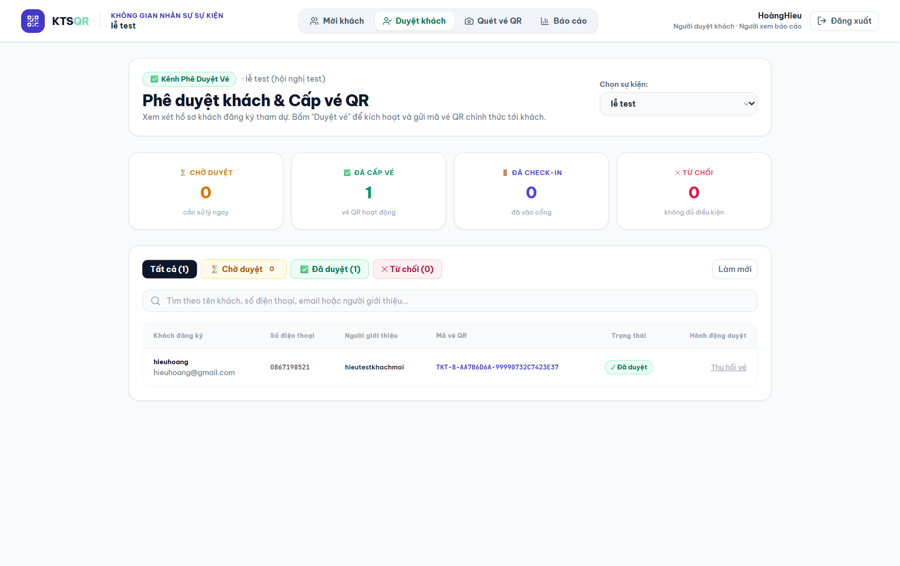
/tenant bằng hvan8613@gmail.com (mật khẩu 12345678) → Tab "Quét vé QR" (hoặc mục "Soát vé QR" trên thanh bên của Ban tổ chức)./staff/scanner.TKT-8-AA7B6D6A-99990732C7423E37) vào ô "Nhập mã vé thủ công" ngay bên dưới camera./staff/scanner khi gặp vé báo vàng, nhân viên bấm "Lập Biên Bản Tranh Chấp", nhập tên/SĐT người cầm vé và lời giải trình./staff/disputes hoặc trong trang Admin) để đối chiếu và bấm Cho phép vào cổng (ALLOW) hoặc Từ chối (DENY).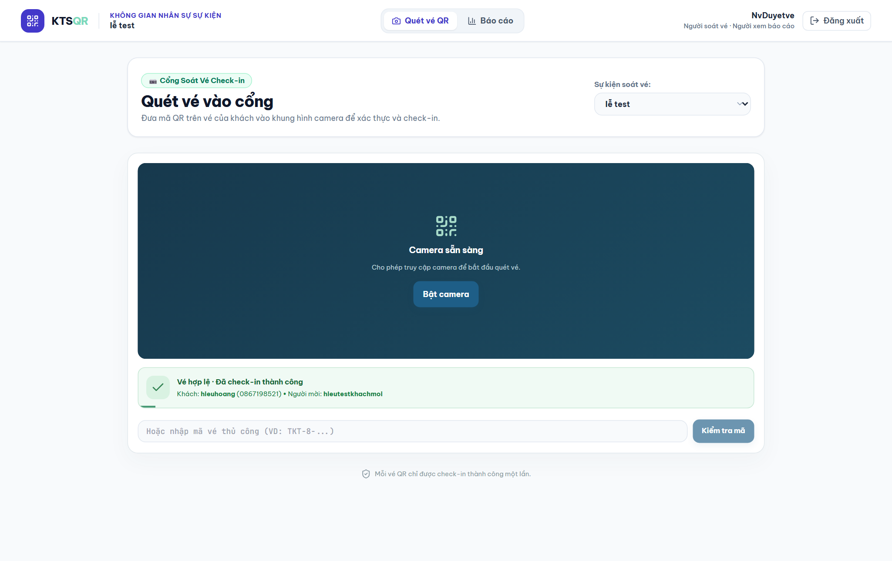
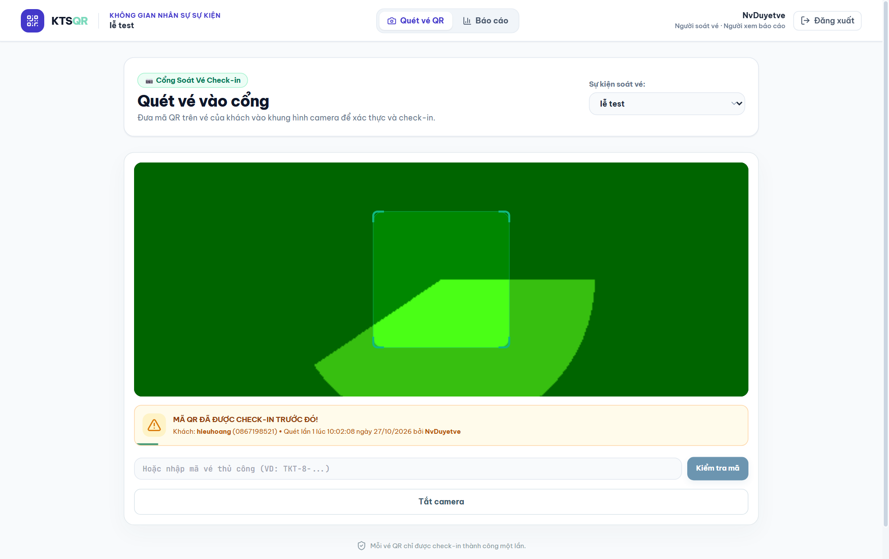
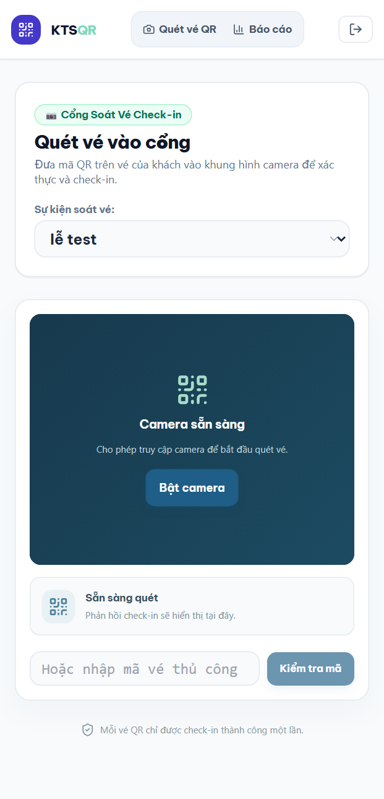
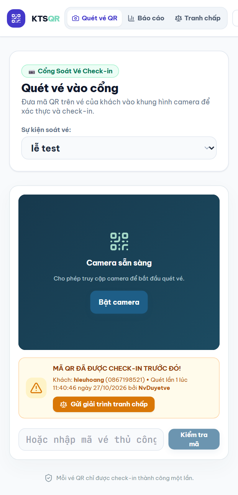
TKT-8-AA7B6D6A-99990732C7423E37 của khách hieuhoang trong sự kiện "lễ test" đã được đặt lại về trạng thái SẴN SÀNG QUÉT (ISSUED) và giữ độ tương phản 100%. Bạn có thể mở vé này trên màn hình laptop và dùng điện thoại mở link https://suites-lined-exhibition-shopping.trycloudflare.com/tenant (đăng nhập hieuquetpr@gmail.com / 12345678) để quét thử:
Quét lần 1 sẽ báo XANH LÁ (Hợp lệ) → Quét lại lần 2 sẽ báo VÀNG (Đã check-in trước đó)!
| Mã | Luồng nghiệp vụ | Kịch bản kiểm thử | Chi tiết kết quả thực tế | Trạng thái |
|---|---|---|---|---|
| T01 | Luồng 1: Admin Tổng | Đăng nhập Admin Tổng | Role: ADMIN, đầy đủ 9 quyền hệ thống | PASS |
| T02 | Luồng 1: Admin Tổng | Kiểm tra Gói dịch vụ & Gói dùng thử | 3 gói dịch vụ đang hoạt động | PASS |
| T03 | Luồng 1: Admin Tổng | Danh sách Đơn vị Khách thuê | Đang quản lý 9 đơn vị khách thuê | PASS |
| T04 | Luồng 2: Ban Tổ Chức | Đăng nhập Ban Tổ Chức | Đơn vị "Kts" (tenant_id=7), Role TENANT_ADMIN | PASS |
| T05 | Luồng 2: Ban Tổ Chức | Kiểm tra hạn mức & cấu hình VietQR | Đã dùng 1/3 sự kiện miễn phí, sẵn sàng VietQR | PASS |
| T06 | Luồng 2: Ban Tổ Chức | Tải danh sách sự kiện của đơn vị | Sự kiện "Lễ ra mắt" & "lễ test" (PUBLISHED) | PASS |
| T07 | Luồng 2: Ban Tổ Chức | Kiểm tra đội ngũ nhân sự đơn vị | Hiển thị đúng danh sách nhân sự thuộc đơn vị | PASS |
| T08 | Luồng 2: Ban Tổ Chức | Phân công nhân sự vào sự kiện | Gán quyền Mời khách / Duyệt khách / Soát vé | PASS |
| T09 | Luồng 3: Nhân Sự | Đăng nhập Nhân sự sự kiện | Role STAFF, tự động đồng bộ quyền từ sự kiện | PASS |
| T10 | Luồng 3: Nhân Sự | Lấy sự kiện đang mở (scope=active) | Hiển thị đầy đủ sự kiện PUBLISHED được gán | PASS |
| T11 | Luồng 3: Nhân Sự | Khởi tạo Link mời chữ ký HMAC | Sinh token inv_... và mã QR mời khách | PASS |
| T12 | Luồng 4: Khách Mời | Mở Link mời & Xác thực chữ ký | Hiển thị đúng tên sự kiện & người giới thiệu | PASS |
| T13 | Luồng 4: Khách Mời | Xác thực OTP 6 số qua Email | Cấp JWT token cho khách hàng thành công | PASS |
| T14 | Luồng 4: Khách Mời | Gửi biểu mẫu đăng ký tham dự | Ghi nhận hồ sơ PENDING và chống trùng SĐT/Email | PASS |
| T15 | Luồng 5: Duyệt & QR | Phê duyệt hồ sơ & Cấp mã vé QR | Sinh mã vé TKT-... + đẩy Socket.IO realtime | PASS |
| T16 | Luồng 5: Duyệt & QR | Khách mở trang "Vé Của Tôi" | Nhận thẻ vé Apple Wallet Pass + QR độ nét 100% | PASS |
| T17 | Luồng 6: Soát Vé QR | Nạp bộ nhớ đệm Offline máy quét | Đồng bộ danh sách vé vào bộ nhớ đệm Offline | PASS |
| T18 | Luồng 6: Soát Vé QR | Quét mã QR Lần 1 (Vé hợp lệ) | Trả về SUCCESS (Xanh lá) + Tên khách & Người mời | PASS |
| T19 | Luồng 6: Soát Vé QR | Quét lại cùng mã QR Lần 2 | Trả về ALREADY_USED (Vàng) + Giờ & Người quét lần 1 | PASS |
| T20 | Luồng 6: Soát Vé QR | Quét mã QR không hợp lệ / khác sự kiện | Trả về INVALID (Đỏ) kèm lý do chi tiết | PASS |
| T21 | Luồng 7: Tranh Chấp | Lập Biên bản tranh chấp tại cổng | Lưu biên bản PENDING liên kết với lượt quét trùng | PASS |
| T22 | Luồng 7: Tranh Chấp | Trọng tài giải quyết tranh chấp | Phê duyệt ALLOW + ghi nhận Audit Log | PASS |
| T23 | Luồng 8: Báo Cáo | Trích xuất báo cáo & Xuất file CSV | Thống kê chính xác Tổng ĐK, Đã duyệt, Đã Check-in | PASS |